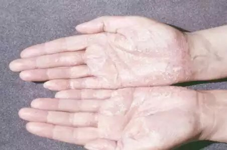
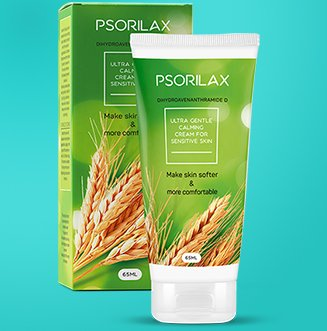
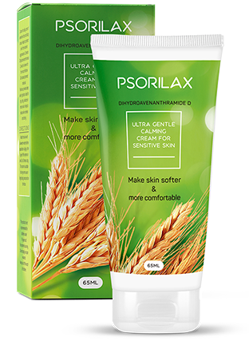
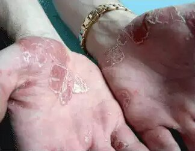

Hallo mein Name ist Linda Schneider und ich bin 36 Jahre alt. Ich habe mich dazu entschlossen, die Geschichte zu erzählen, wie ich meine Schuppenflechte in den Griff bekommen habe. Das Thema ist ein bisschen knifflig, und zwar besonders für Frauen. Es fällt nicht sehr einfach darüber zu reden ... Schuppenflechte ist eine schwierige Krankheit , welche sich auch auf das Aussehen auswirkt. Das Leben kann wirklich zur Qual werden, wenn man hässliche und unansehnliche Hautfetzen an sich kleben hat. Neben Jucken, Schwellungen und sich schälender Haut muss man sich außerdem mit den anderen Menschen auseinandersetzen, die hinter dem eigenen Rücken lästern. Viele Menschen glauben außerdem, dass Schuppenflechte ansteckend ist. Deswegen werden Betroffene häufig von der Gesellschaft ausgeschlossen und können so kein normales Leben führen ... Inzwischen habe ich ein Alter erreicht, indem die Aussagen anderer Menschen nicht mehr so sehr schmerzen, aber durch die Erkrankung ist das für mich trotzdem schwer ...
Die Geschichte beginnt vor fünf Jahren. Eines Tages duschte ich und fühlte dann plötzlich Schorf an meinen Ellenbogen. Das waren die ersten Stellen, welche von der Entzündung betroffen waren. Sie sahen aus wie pinke Platten, waren hart und hatten Risse. Also benutzte ich eine Kosmetikcreme dagegen. Ich ging davon aus, dass es sich nur um trockene Haut handeln würde, weil ich mich nicht richtig gepflegt hatte. Damit meine ich nicht, dass ich mich nicht um mich kümmere, denn eigentlich tue ich das und wähle auch meine persönlichen Pflegeprodukte richtig aus. In meinem ganzen Leben hatte ich noch keine Allergie.
Nach etwa drei Wochen bekam ich ungewöhnliche Flechten und fing an mir Sorgen zu machen. Deswegen ging ich sofort zum Hausarzt. Nach einer gründlichen Untersuchung und Analyse wurde bei mir Schuppenflechte diagnostiziert. Ich war wirklich schockiert! Mein Arzt verschrieb mir dann die normale Therapie. Hormonelle Medikamente (Salben und Lotionen) und eine homöopathische Behandlung (Bäder mit Meersalz und Kräutern). Diese Behandlungen konnten mir aber nur kurzfristige Linderung bringen. Die Stellen verfärbten sich und die anderen Symptome (Jucken und Entzündungen) verschwanden leicht. In dem Moment, in dem ich jedoch damit aufhörte, diese intensive Hautpflege zu betreiben, kamen all meine Probleme zurück. Es schien aber ganz so, als würden die Stellen langsamer zurückkommen, nachdem ich eine Behandlung vorgenommen hatte. Das ging so 2,5 Jahre lang. Irgendwann breitete sich die Schuppenflechte jedoch auf meinen beiden Händen aus. Noch mehr schockierte mich jedoch die Tatsache, dass sich die Krankheit nun auch auf meinen Beinen und meinem Po zeigte! Das hat mich wirklich fast in den Wahnsinn getrieben. Durch meine Panik verschlimmerte sich die Situation nur. Das Lesen der Kommentare anderer Menschen, die auch unter Schuppenflechte litten, stresste mich noch mehr. Einigen konnte schon 15 oder 20 Jahre nicht geholfen werden. Andere hingegen mussten schon ihr ganzes Leben lang mit dieser Krankheit leben ...
Ich begann also hektisch alle möglichen Produkte aus den Apotheken zu kaufen, die gegen Schuppenflechte helfen sollten. Cremes, Tropfen, Sprays, einfach wirklich alles! Ich versuchte alternative Behandlungsmethoden, wie beispielsweise eine Behandlung mit speziellem Schlamm im Spa. Ich habe sogar versucht, die Krankheit mit einem alten Zauber zu exorzieren. Natürlich brachte das auch keine Ergebnisse. Mein Problem fing an, sich mehr und mehr auf mein Leben und meine Arbeit auszuwirken. Ich schämte mich für mich und mein Aussehen, weswegen ich reizbar, aggressiv und überempfindlich wurde. Leider sah ich kein Licht am Ende des Tunnels ...
Dann hörte ich von Psorilax dank einer Freundin. Sie bevorzugt natürliche Behandlung, die keine "krassen Stoffe", wie beispielsweise Hormone, beinhalten. Nach all meinen Versuchen mit Medikamenten, dauerte es nicht lange, bis sie mich überreden konnte. Also kaufte ich Psorilax sofort auf der Website des Herstellers und begann mit meiner Behandlung. Ich hatte nichts zu verlieren, außer meine Zeit und Energie ... Um ehrlich zu sein, hatte ich nach all den gescheiterten Versuchen keine Hoffnung mehr auf eine positive Entwicklung. Die Worte meines Arztes, dass natürliche Produkte bei Schuppenflechte sinnlos seien, hatten sich tief in meinen Gedanken verankert.
Nachdem ich mich 10 Tage mit Psorilax behandelte, bemerkte ich, dass meine Haut weniger juckte und brannte. Manchmal vergaß ich sogar schon, dass die Schuppenflechte da war. Auch das Aussehen meiner Haut verbesserte sich. Die betroffenen Stellen wurden kleiner und meine Entzündungen reduzierten sich. Meine Haut hörte auf sich zu schälen und wurde langsam weicher! Ich konnte es gar nicht glauben! Ich nutzte Psorilax auf den neuen Stellen, die nicht mehr wuchsen und bald fast verschwunden waren! Der Erfolg meiner Behandlung mit Psorilax hat mich wirklich sehr beeindruckt und ich war schon ganz gespannt darauf, was die Creme noch so alles machen könnte. Nach nur einem Monat hatte ich mein Problem endlich in den Griff bekommen. Meine Beschwerden waren fast verschwunden!
Nach drei Monaten war meine Haut in einem so guten Zustand, den ich mir vor der Behandlung nur hätte erträumen können. Ich bekam nur sehr selten eine neue Stelle und die alten Stellen verschlimmerten sich nicht mehr. Im Laufe der Zeit hat sich so mein Aussehen wirklich verändert. Jetzt benutze ich Psorilax vorbeugend ein Mal alle zwei Monate und, falls ich wieder neue Stellen bekomme. Es gibt bei Psorilax keine Gegenanzeigen oder Nebenwirkungen, weswegen das Produkt auch nach Beendigung der Behandlung benutzt werden kann. Ich kann nicht mit Worten beschreiben, wie glücklich ich jetzt bin! Mit meiner Erfahrung will ich wirklich allen helfen, die eine Spezialbehandlung brauchen, damit auch sie ein neues Leben anfangen und endlich die Schuppenflechte in Griff kriegen können!
Jetzt werde ich Ihnen ein paar Infos darüber geben, wie sich das Produkt zusammensetzt. Psorilax besteht aus sechs Grundbestandteilen.
- Glycerin
Es hat beruhigende Eigenschaften und hilft gegen den Juckreiz. Es wirkt auch mild analgetische auf Haut und Gelenke. - Urea
Es hat eine antimikrobielle Wirkung, unzählige heilende Eigenschaften und zieht in wenigen Minuten in die Haut ein. - Mandelöl
Es reduziert die entzündlichen Prozesse, kontrolliert die Talgdrüsen und hat beruhigende sowie weich machende Eigenschaften. - Haferextrakt
Es versorgt die Haut mit Feuchtigkeit und bringt ihr gleichzeitig Elastizität. Es entfernt die resistente Trockenheit, hat antioxidative Eigenschaften und versorgt die Haut mit Vitaminen und Mineralien. - Tocopherylacetat
Es tönt die Hautoberfläche ab, lindert den Juckreiz und Unannehmlichkeiten, steigert den Regenerationsprozess und entfernt lockere verhornte Hautpartikel.
Hydroxy phenylpropamidobenzoesäure, Wasser, Glycerylstearat, Ethylhexylstearat und weitere Inhaltsstoffe wurden sorgfältig ausgesucht, weswegen dieses Produkt eine ausgezeichnete Wirkung zeigt. Die Komponenten dieser Creme desinfizieren die Haut und verhindern, dass Entzündungen in den Blutkreislauf gelangen können. Sie regulieren den Stoffwechsel in den tieferen Hautschichten, verbessern die Mikrozirkulation und verlangsamen die abnormal schnelle Teilung der Hautzellen.
Es ist wichtig zu verstehen, dass die Zusammensetzung von Psorilax als einzigstes Produkt wirkliche Linderung bei Schuppenflechte bringt. Psorilax sollte nur von der Herstellerwebiste bestellt werden, da Sie ansonsten riskieren, ein gefälschtes Produkt zu kaufen, welches ihre Erkrankung mitunter verschlimmern könnte.
Die besonderen Inhaltsstoffe von Psorilax machen es möglich, dass die Creme in jedem Krankheitsstadium benutzt werden können. Die kombinierte Anwendung mit konventionellen Behandlungsmethoden ist ebenfalls möglich. Übrigens war mein Arzt wirklich überrascht von den Ergebnissen, die ich mit Psorilax erreichte. Er hat jetzt angefangen, seinen Patienten diese Creme als Hauptmittel zu verschreiben.
Glücklicherweise kann Ihnen meine Erfahrung dabei helfen, wieder gesünder zu werden. Ich freue mich, Ihre Fragen zu beantworten.

Kommentare
Helen, 30 Jahre
Vielen Dank für die Info! Ich werde sie auf jeden Fall ausprobieren!
Vera, 25 Jahre alt
In meinem Fall hat sich die Schuppenflechte das erste Mal vor 9 Jahren bemerkbar gemacht... Ich habe wirklich unendlich viele Sachen ausprobiert!!! Warum hat mir mein Arzt nicht auch dieses Produkt empfohlen? Ist es neu? 
Linda, 36 Jahre
Das Produkt Psorilax ist ein neues Mittel. Vielleicht kennt es dein Arzt einfach noch nicht.
Eva, 33 Jahre alt
Ja es ist wirklich sehr wichtig für uns, das originale Psorilax zu benutzen! Leider habe ich ein Mal eine Fälschung gekauft und mein Zustand verschlimmerte sich! Dieses Produkt gibt es in keinen Apotheken ...
Linda, 36 Jahre alt
Man muss das Originalprodukt verwenden, um die Krankheit in den Griff zu bekommen. Psorilax kann man nur schwer in Apotheken finden und wird nicht in großen Mengen produziert. Deswegen ist es am besten, wenn man es von der Website bestellt. So ist alles schneller und zuverlässiger!
Matthias, 39 Jahre
Linda ich betrachte diese Mittel wirklich skeptisch. Ich glaube nicht, dass man den Zustand der Schuppenflechte verbessern kann, wenn man Öle und einige "Chemikalien" und entzündungshemmende Mittel miteinander mischt! Entweder hattest du eine leichte Form der Erkrankung, oder gleich gar keine Schuppenflechte!
Linda, 36 Jahre alt
Matthias, ein angesehener Arzt hat die Krankheit bei mir diagnostiziert. Ich gebe zu, dass meinen Körper nicht vernachlässigt habe. Sofort, nachdem ich die ersten Symptome bemerkte, ging ich zum Arzt. Andererseits kenne ich Fälle, in denen Psorilax Menschen wirklich geholfen hat, die schon seit 10 Jahren und mehr an Schuppenflechte litten.
Maria, 28 Jahre alt
Ich befinde mich auch im Anfangsstadium der Krankheit und werde das Mittel auf jeden Fall probieren! Ich will nicht, dass sich die Krankheit noch weiter ausbreitet!
Andreas, 51 Jahre alt
Ich stimme Linda zu! Psorilax kann wirklich jedem helfen, ganz egal, in welchem Krankheitsstadium man sich befindet. Ich habe meine Lektion gelernt. 7 Jahre lang habe ich nutzlose Behandlungen über mich ergehen lassen. Nachdem ich Psorilax benutzte, habe ich endlich eine Verbesserung bemerkt, und zwar nach nur einem Monat! Ich kann wirklich nur empfehlen, diese Creme zu verwenden!
Jana, 47 Jahre alt
Ich muss sagen, dass Psorilax den Zustand der Schuppenflechte meines Mannes in 2 - 3 Monaten wirklich verbessert hat. Bei ihm war die Erkrankung wirklich schon fortgeschritten. Er konnte keine Hormone nehmen und auf die Salben reagierte er allergisch. Psorilax war wirklich perfekt für ihn!
Anna, 35 Jahre alt
Vielen Dank, dass du deine Erfahrung mit uns teilst! Ich leide ebenso an Schuppenflechte und meine Krankheit wird immer schlimmer. Konventionelle Behandlungen helfen leider gar nicht!
Linda, 36 Jahre alt
Anna gib nicht auf! Alles wird besser werden! Ich bin mir sicher, dass auch dir dieses Mittel Linderung bringen kann!
Alex, 19 Jahre alt
Kann man Psorilax benutzen, wenn man gegen Mandeln allergisch ist?
Linda, 36 Jahre alt
Darüber sprichst du besser mit deinem Arzt! Ich kann mich aber an keine Situation erinnern, in der Psorilax eine allergische Reaktion bei denjenigen vorgerufen hat, die Psorilax benutzen und darunter sind viele Betroffene, die dauerhaft unter Allergien leiden.
Katja, 44 Jahre alt
Wie können diese Öle die Ursachen dieser Krankheit lindern? Die narbigen Stellen auf der Haut sind doch nur die Folge?
Linda, 36 Jahre alt
Die Öle heilen dich nicht, sondern helfen dem Körper das Problem in den Griff zu bekommen und die Beschwerden zu lindern. Sie fördern den Stoffwechselprozess der Haut und bieten Vitamine und Mineralstoffe, welche die Mikrozirkulation verbessern usw. Generell bieten sie einen besseren Gesundheitszustand.
Jan, 29 Jahre alt
Das sieht gut aus und ich werde es probieren! Das Jucken stört mich wirklich sehr, aber generell ist mir diese Krankheit ein Dorn im Auge!
Sandra, 40 Jahre alt
Ich kann zugeben, dass Psorilax mir ebenfalls geholfen hat, jedoch nicht so schnell, wie in deinem Fall. Ich leide schon etwa 10 Jahre an Schuppenflechte.
Jochen, 37 Jahre alt
Meine Behandlung mit Psorilax dauerte 6 Monate. Ich bereue es wirklich nicht! Das ist das einzige Produkt, das es geschafft hat, meine Schuppenflechte unter Kontrolle zu bekommen. Heilen konnte mich bisher noch nichts, aber die anderen Produkte haben mir noch nicht so ein Ergebnis gebracht, obwohl ich manche sogar schon ein ganzes Jahr benutzte.
Anja, 18 Jahre alt
Diese Geschichte hat mir echt geholfen! Ich werde die Behandlung bald anfangen und mich hoffentlich bald wieder gesünder fühlen!
Sabine, 28 Jahre alt
Warum nimmst du Psorilax weiter, nachdem du deinen Zustand so sehr verbessern konntest? Kann das abhängig machen?
Linda, 36 Jahre alt
Natürlich muss man das nicht! Man kann auch nicht davon abhängig werden. In meinem Fall waren einfach große Stellen betroffen, weswegen ich schwierige Stellen habe. Ich denke, dass ich einfach nur übervorsichtig bin. Mein Arzt hat mir auch gesagt, dass es nichts mehr gibt, über das ich mir Sorgen machen muss.
Katharina, 48 Jahre alt
Wirklich vielen Dank für diese Geschichte!!! Ich bin auf den Gedanken gekommen, dass ich meine Schuppenflechte nun wirklich loswerden kann! Sicher werde ich berichten, was sich bei mir getan hat, nachdem ich Psorilax angefangen habe zu benutzen!
Gregor, 59 Jahre alt
Ich probierte Psorilax letztes Jahr. Mir hat das Produkt wirklich sehr geholfen! Ich kann nur jedem empfehlen, diese Creme zu benutzen!
Jonas, 32 Jahre alt
Meine Mutter hat dieses Mittel einen Monat lang benutzt. Nun ist sie wirklich sehr glücklich! Sie hat keine neuen Stellen und die alten Problemzonen verbessern sich. Ich hoffe wirklich, dass sie ihre Schuppenflechte endlich kontrollieren kann, wenn sie sie schon nicht ganz heilen kann.